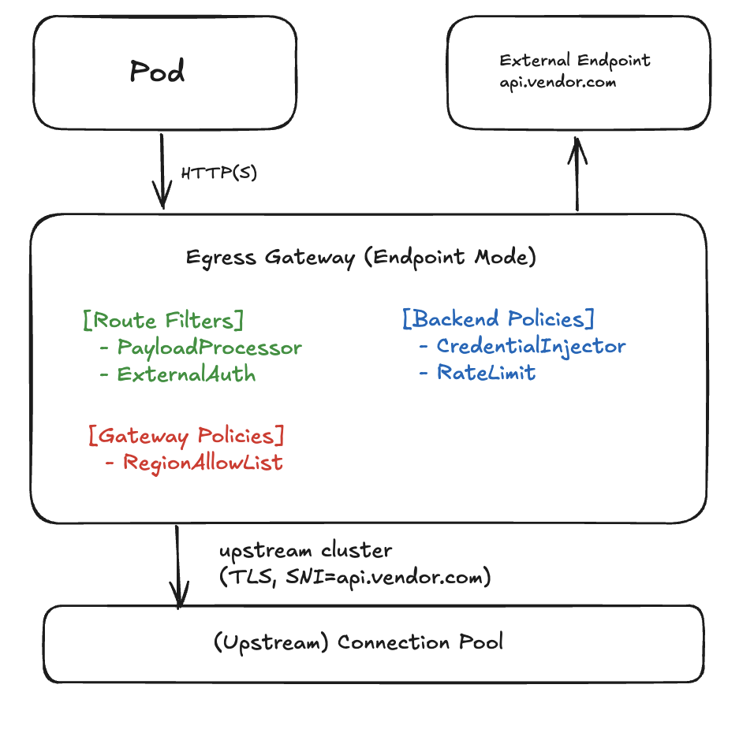
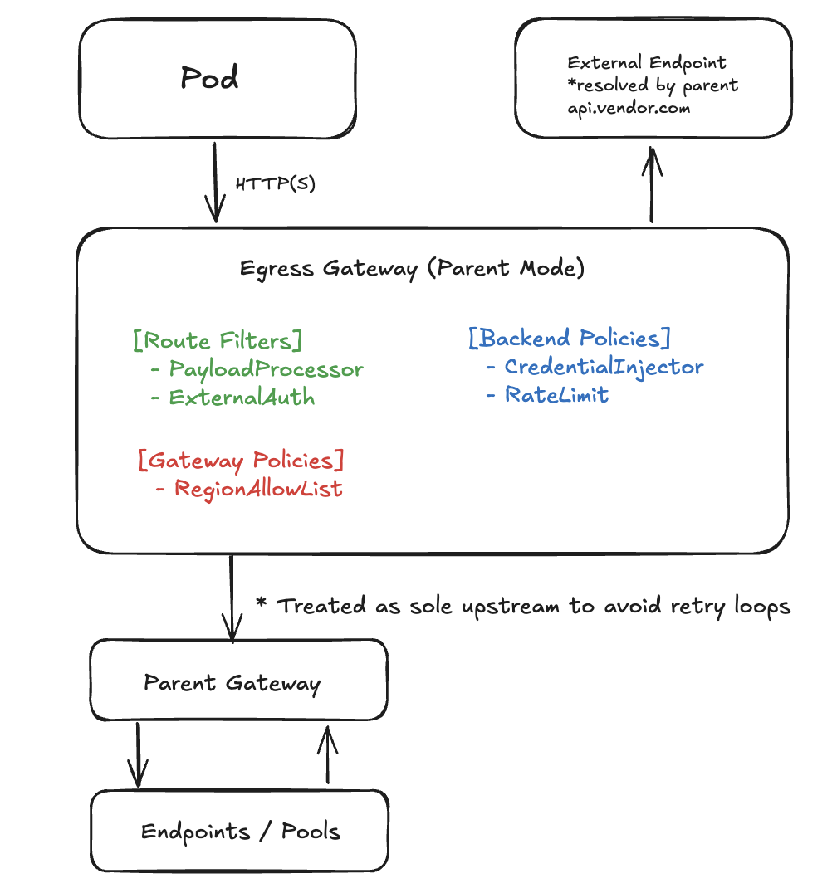
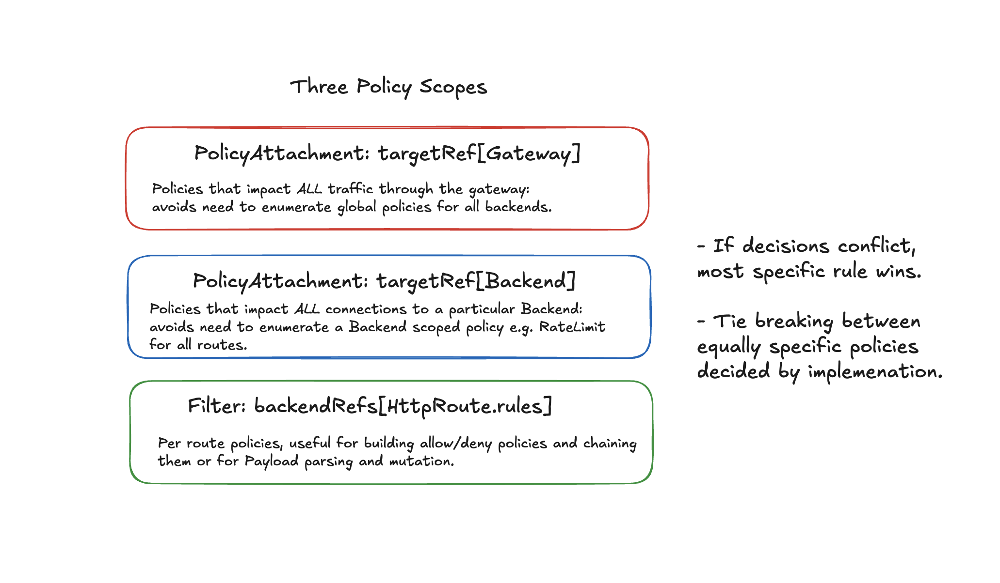

AI Gateway User Stories Draft
Below I have a hypothetical architecture for an Egress Gateway which allows for network policies at three different scopes: Gateway (global), Backend (per FQDN), Route (per HTTP/GRPCRoute).
Proposed High Level Implementation
The proposal reuses existing Gateway API primitives (Gateway, HTTPRoute, GRPCRoute) and introduces a Backend resource derived from this proposal for representing external destinations and cross-cluster endpoints.
The diff for my proposal is here.
Two networking modes are available: Endpoint and Parent. In Endpoint mode the gateway connects directly to requested resources. In Parent mode it treats another gateway as its sole upstream.
 
Policy Pattern summary
| Policy Layer | Example CRDs / Patterns | Typical Use |
|---|---|---|
| Gateway | GuardRailsPolicy, RegionAllowListPolicy, ObservabilityPolicy |
Org-wide posture: geo restrictions, auditing, deny-lists |
| Backend | EgressPolicy, CredentialInjector, BackendTLSPolicy, DNSPolicy, QoSController |
Per-destination credentials, rate/QoS, DNS, mTLS |
| Route | PayloadProcessor, ExternalAuth |
Per-request parsing, redaction, or access filtering |

User Stories in this Model
These user stories were taken directly from the AI Gateway Working Group’s egress-gateway proposal.
1. Access to external services
As a gateway admin I need to provide workloads within my cluster access to services outside of my cluster, in particular cloud and otherwise hosted services.
| Field | Value |
|---|---|
| Routing mode | Endpoint |
| Route filters | Optional ExternalAuth (allow/deny) |
| Backend policies | CredentialInjector, BackendTLSPolicy, optional RateLimitPolicy |
| Gateway attachments | Optional GuardRailsPolicy |
| Example policy objects | EgressPolicy, BackendTLSPolicy, GuardRailsPolicy |
| Notes | Baseline: HTTPRoute → Backend (FQDN) with credentials and TLS validation. |
2. Central token management
As a gateway admin I need to manage access tokens for 3rd party AI services so workloads can perform inference without managing secrets directly.
| Field | Value |
|---|---|
| Routing mode | Endpoint |
| Route filters | — |
| Backend policies | CredentialInjector (rotating API keys, STS/OIDC), RateLimitPolicy |
| Gateway attachments | — |
| Example policy objects | EgressPolicy, CredentialInjector |
| Notes | Secrets stay centralized; credentials injected dynamically per backend. |
3. Cloud fail-over
As a gateway admin providing token management for 3rd party AI cloud services, I need fail-over between providers when the primary fails.
| Field | Value |
|---|---|
| Routing mode | Endpoint |
| Route filters | Optional ExternalAuth or health filter |
| Backend policies | Multiple Backend objects with RateLimitPolicy, priority/weight for fail-over |
| Gateway attachments | Optional backoff defaults (GuardRailsPolicy) |
| Example policy objects | EgressPolicy, QoSController, BackendTLSPolicy |
| Notes | Fail-over handled at backend level; avoids duplicate inference. |
4. Verify external service identity
As a gateway admin providing egress routing to external services, I need to verify the identity of the remote service and enforce authentication.
| Field | Value |
|---|---|
| Routing mode | Endpoint or Parent |
| Route filters | — |
| Backend policies | BackendTLSPolicy (CA/hostname validation), optional mTLS |
| Gateway attachments | Optional global TLS settings |
| Example policy objects | BackendTLSPolicy, EgressPolicy |
| Notes | Ensures outbound TLS verification and optional mTLS client auth. |
5. Verify client to external service
As a gateway admin providing egress routing to external services, I need to verify the client identity when connecting to the external service.
| Field | Value |
|---|---|
| Routing mode | Endpoint or Parent |
| Route filters | — |
| Backend policies | mTLS via BackendTLSPolicy.clientCertificateRef |
| Gateway attachments | Optional PKI defaults |
| Example policy objects | BackendTLSPolicy, EgressPolicy |
| Notes | Gateway acts as TLS client; authenticates with per-backend certificate. |
6. Manage custom CAs and CRLs
As a gateway admin, I need to manage certificate authorities for egress connections, including pinning, intermediates, and CRLs.
| Field | Value |
|---|---|
| Routing mode | Endpoint or Parent |
| Route filters | — |
| Backend policies | BackendTLSPolicy (custom CA bundle, SPKI pins, CRL/OCSP config) |
| Gateway attachments | Optional global CA defaults |
| Example policy objects | BackendTLSPolicy, GuardRailsPolicy |
| Notes | Per-destination trust; centralized CA revocation or pinning. |
7. Controlled DNS resolution
As a gateway admin providing egress routing to external services, I need to control DNS resolution for these sources and enable reverse DNS checks.
| Field | Value |
|---|---|
| Routing mode | Endpoint or Parent |
| Route filters | — |
| Backend policies | DNSPolicy (resolver, TTL, reverse-DNS enforcement) |
| Gateway attachments | Optional global resolver config |
| Example policy objects | EgressPolicy, DNSPolicy |
| Notes | Backend overrides global resolver defaults; secured DNS chain. |
8. Dedicated inference cluster
As a cluster admin I need to provide inference to workloads, but through a dedicated cluster for separation.
| Field | Value |
|---|---|
| Routing mode | Parent |
| Route filters | Optional ExternalAuth, PayloadProcessor |
| Backend policies | Backend = parent gateway; CredentialInjector, BackendTLSPolicy |
| Gateway attachments | GuardRailsPolicy at parent gateway |
| Example policy objects | EgressPolicy, BackendTLSPolicy, GuardRailsPolicy |
| Notes | Local retries only; parent gateway manages pool routing and guardrails. |
9. Cloud inference access
As a cluster admin I need to provide inference access via cloud services (e.g., Vertex, Bedrock) instead of running models locally.
| Field | Value |
|---|---|
| Routing mode | Endpoint |
| Route filters | Optional PayloadProcessor |
| Backend policies | CredentialInjector, BackendTLSPolicy |
| Gateway attachments | Optional RegionAllowList |
| Example policy objects | EgressPolicy, BackendTLSPolicy, GuardRailsPolicy |
| Notes | Managed API egress with centralized credential and TLS handling. |
10. Specialized provider features
As a developer building an inference-enabled app, I need access to AI cloud providers offering unique capabilities.
| Field | Value |
|---|---|
| Routing mode | Endpoint |
| Route filters | Optional PayloadProcessor, ExternalAuth |
| Backend policies | Provider-specific headers via CredentialInjector, optional QoS |
| Gateway attachments | Optional ModelDenyList or RegionAllowList |
| Example policy objects | EgressPolicy, CredentialInjector, GuardRailsPolicy |
| Notes | Backend policies abstract provider details and headers. |
11. Local-to-cloud fail-over
As a developer of an inference-enabled app, I need fail-over from local models to 3rd party providers if local workloads fail.
| Field | Value |
|---|---|
| Routing mode | Endpoint |
| Route filters | Optional PayloadProcessor |
| Backend policies | Multiple Backend targets (local + remote); Rate/QoS per destination |
| Gateway attachments | Optional GuardRailsPolicy or retry configuration |
| Example policy objects | EgressPolicy, QoSController, BackendTLSPolicy |
| Notes | Weighted fail-over with clear retry behavior to avoid duplication. |
12. Outbound attribution
As a platform operator I need to attribute outbound traffic per namespace or workload to enforce rate or utilization limits.
| Field | Value |
|---|---|
| Routing mode | Endpoint or Parent |
| Route filters | — |
| Backend policies | — |
| Gateway attachments | ObservabilityPolicy (metrics, audit) |
| Example policy objects | ObservabilityPolicy, GuardRailsPolicy |
| Notes | Emit metrics tagged by {gateway, route, backend, ns, sa}. Enables billing and enforcement. |
13. Regional compliance
As a compliance engineer I need to ensure outbound traffic to third-party AI resources obeys regulatory restrictions like region locks.
| Field | Value |
|---|---|
| Routing mode | Endpoint or Parent |
| Route filters | — |
| Backend policies | Optional metadata tag region: eu-west |
| Gateway attachments | RegionAllowListPolicy |
| Example policy objects | GuardRailsPolicy, RegionAllowListPolicy |
| Notes | Gateway rejects connection if destination not in approved region set. |